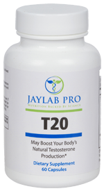

T20
Product profile · Marketplace data 2026-10-09 · Sales-page research 2026-10-09 · Categories: Food Supplements

Marketplace record
| Product type | Supplements - health |
|---|---|
| Price | $64.82 (Single payment) |
| Affiliate commission | 70% |
| Refund window | Per the vendor's sales page — check the official page before buying |
| Vendor | jaylabpro (listed since 2024-01-24) |
| Marketplace stats* | Cart conversion — · cancel rate — · affiliate earnings/sale $45.38 |
* Vendor-side marketplace statistics reported by Digistore24; they depend on traffic quality and are not a forecast.
Vendor's marketplace description
T20 supports your body’s healthy testosterone levels through natural testosterone production… Support a healthy muscular body, support vibrant energy levels and promote an active libido as you age with natural and clinically backed ingredients. You have the option of $100 CPA per sale or you can choose rev share and we are paying 70% for all front-end sales and 60% for all back-end sales. We have …
From the vendor's sales page
Page title: Save Your Mojo
Headline
Discover How A Cheating Girlfriend Drove One 43-Year-Old Man To Discover The Secret To Turning Back His "Virility Clock" 20 Years With A Simple 30-Second Solution ...
Section headlines
- That Has His NEW Girlfriend Stocking up! (And It Doesn't Come From The Pharmacy)
- "Wow, I haven't heard her that loud in a long time!"
- How has the research on men's health overlooked this for so long?
- This simple solution finally addresses the 3 undeniable pillars of consistent and satisfying sexual performance and long-term men's health.
- And along with weight gain, a lagging sex drive is the number one concern for guys over age 40. [1]
- Every solution out there focuses on raising testosterone levels but NOT because that's the best answer...
- These days when we hit 40 we know we've got a long way to go. We want to feel good, look good, have tons of energy, AND have a great sex life.
- We want to feel strong, vital and ALIVE!
- Every man's sexual health relies not on one, but three unique "pillars" :
- Testosterone
Opening copy
That was Dan's weird first thought when he walked in and saw his girlfriend straddling some dude on the couch...wailing at the top of her lungs.
He started yelling at both of them… The guy jumped to his feet, grabbed his clothes, and made a beeline out the backdoor. His soon-to-be-ex covered herself and just stared at him…more annoyed than ashamed.
I felt awful for him. This was his first serious girlfriend since his divorce. He thought it was headed somewhere long-term…
Prices mentioned on the page: $74.95 · $74.95, · $57.95 · $17 · $49.98 · $74.90 · $249.95 · $1.93 · $17.00 · $1.11 · $449.70 · $33.32
Guarantee language found: “60” — always confirm the current terms on the official page before relying on it.
Research method: raw HTML fetch · 7231 words on page · quality: rich · researched 2026-10-09. Full research file (MD) ↗
Where to check it out
Read the vendor's full sales page (current price, guarantee terms and bonuses are listed there):
View official sales page
That link is an affiliate link — if you buy through it we earn a commission from the vendor at no extra cost to you.